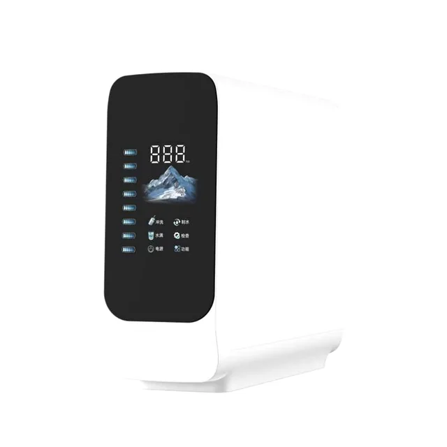
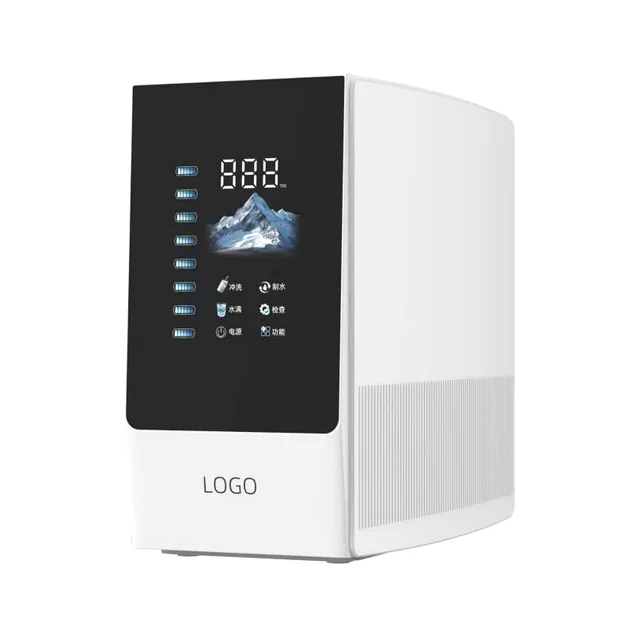
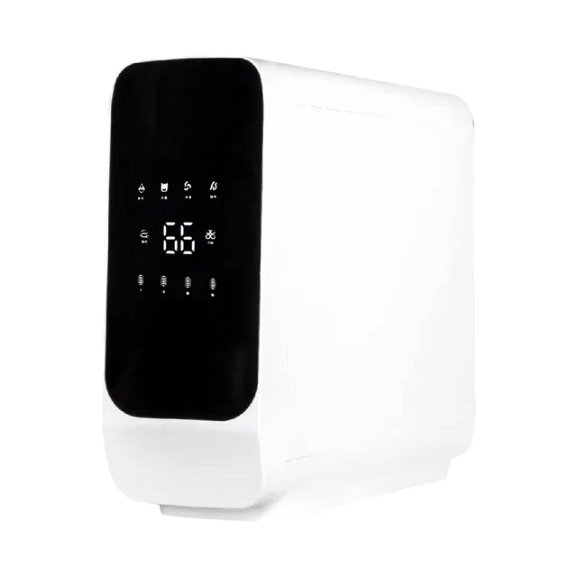
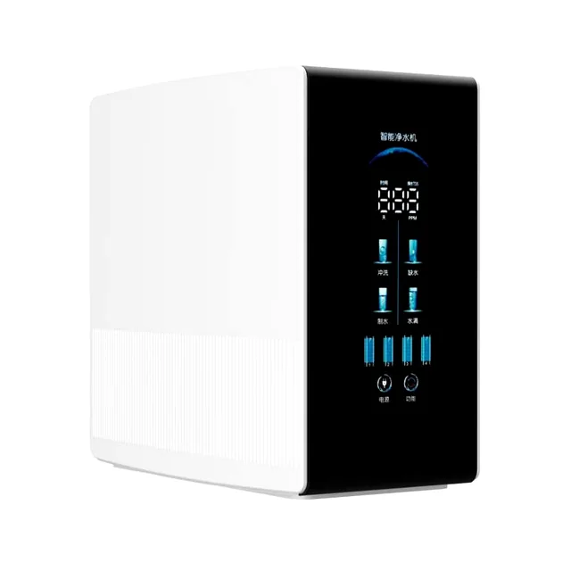
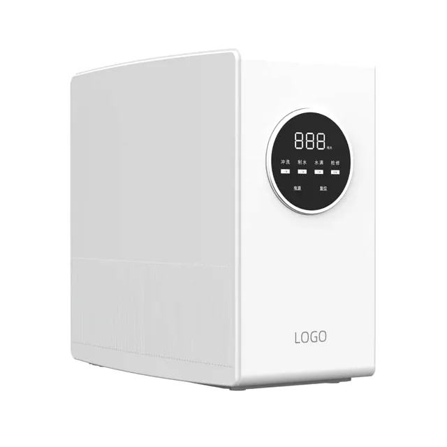

Pemurni Air RO Pintar 400G-1200G
Pemurni Air RO PintarPemurni air RO pintar ringkas ini cocok untuk pemasangan bawah wastafel atau di atas meja. Kapasitas dapat dikonfigurasi 400G, 600G, 800G atau 1200G, dengan tampilan TDS real-time dan pengingat umur filter.
Spesifikasi Teknis
Pemurni Air RO Pintar 400G-1200G
| Parameter | Spesifikasi |
|---|---|
| Jenis produk | Pemurni Air RO Pintar 400G-1200G |
| Aliran air murni | 400G/600G/800G/1200G sesuai pesanan |
| Aplikasi | Pemasangan bawah wastafel atau di atas meja |
| TDS | Panel menampilkan status kualitas air, nilai TDS dan umur filter, membantu pengguna merencanakan penggantian cartridge tepat waktu. |
| Proses pengolahan | Sedimen PP + prafiltrasi karbon + membran RO + karbon akhir, sesuai proyek |
| Air baku | Air keran kota; kondisi masuk dikonfirmasi sebelum penawaran |
| OEM/ODM | Kapasitas, pompa, membran RO, set filter, warna bodi, posisi logo, bahasa panel, manual dan kemasan dapat disesuaikan dengan pasar. |
Pemurni Air RO Pintar
Pemurni Air RO Pintar 400G-1200G





Opsi Konfigurasi
Pemurni Air RO Pintar
Sistem RO pintar ringkas untuk pemasangan bawah wastafel atau meja, dengan pilihan kapasitas 400G-1200G.
| TDS | Panel menampilkan status kualitas air, nilai TDS dan umur filter, membantu pengguna merencanakan penggantian cartridge tepat waktu. |
|---|---|
| Penyesuaian proyek | Kapasitas, pompa, membran RO, set filter, warna bodi, posisi logo, bahasa panel, manual dan kemasan dapat disesuaikan dengan pasar. |
| Aplikasi | Dapur rumah, apartemen, kantor, program distributor dan perangkat label pribadi |
| Minta Penawaran OEM | Kirim kapasitas, voltase, sumber air, gaya pemasangan, logo, bahasa panel, kemasan dan pasar sasaran untuk evaluasi. |
Pertanyaan umum
Pemurni Air RO Pintar 400G-1200G
400G/600G/800G/1200G sesuai pesanan
Panel menampilkan status kualitas air, nilai TDS dan umur filter, membantu pengguna merencanakan penggantian cartridge tepat waktu.
Kapasitas, pompa, membran RO, set filter, warna bodi, posisi logo, bahasa panel, manual dan kemasan dapat disesuaikan dengan pasar.
Minta Penawaran OEM: Pemurni Air RO Pintar 400G-1200G
Kirim kapasitas, voltase, sumber air, gaya pemasangan, logo, bahasa panel, kemasan dan pasar sasaran untuk evaluasi.